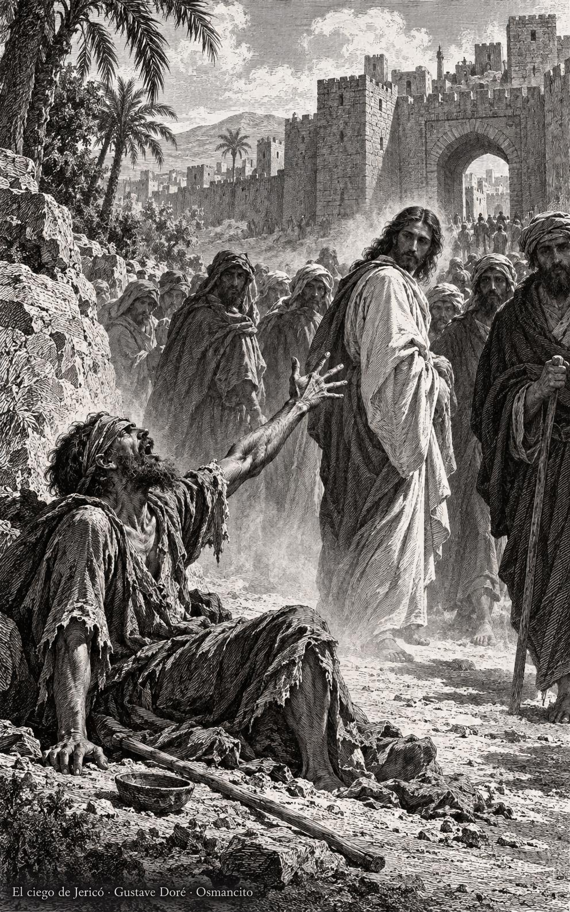
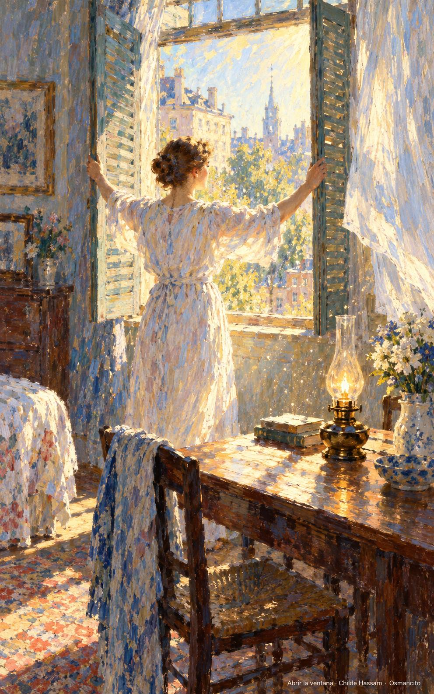
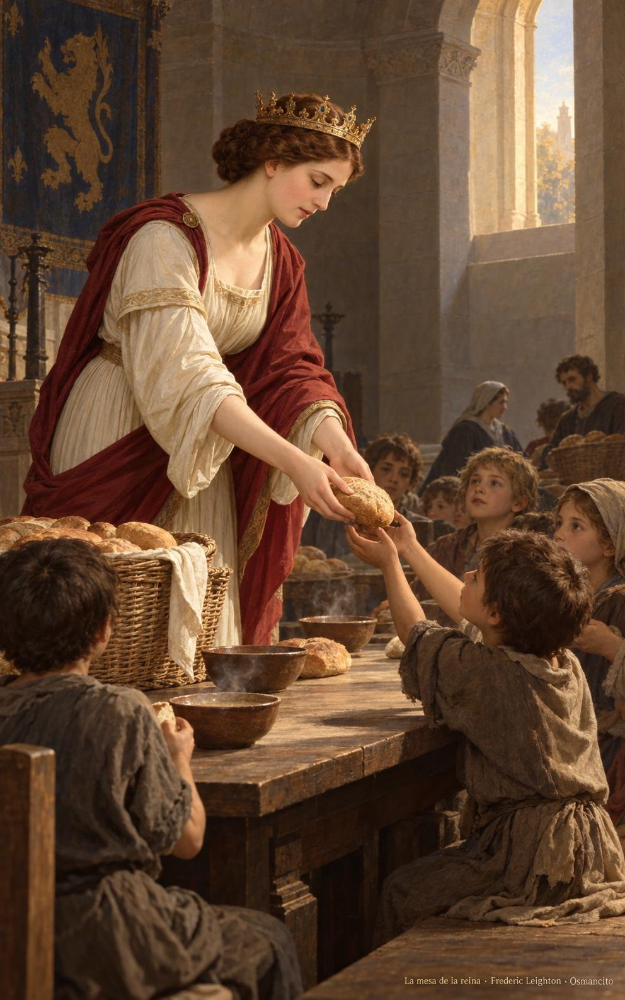
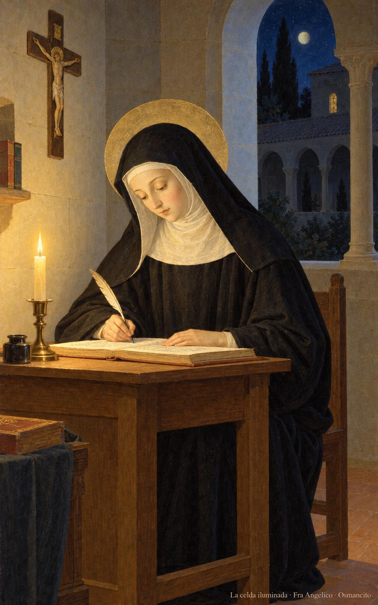

16 de noviembre de 2026
¡Buenos días!
Volver a ver
37
Señor, que vea.
Lucas 18,41. Fuente
Que gritemos sin callarnos cuando la vida pase de largo, que pidamos ver con el corazón limpio y humilde. Que volvamos al primer amor, a la ternura del comienzo, y recordemos de dónde caímos. Que seamos un árbol plantado junto al río, que da su fruto a tiempo. Que la fe nos abra los ojos y sigamos el camino bendiciendo, despiertos, con la vista nueva puesta en la luz que nos llama desde el principio.

- El ciego alza la voz al borde del camino y Jesús se detiene ante él: Lucas 18, la fe que pide ver.

- Los postigos se abren y la luz de la mañana entra de golpe en la habitación: volver a ver es volver al primer amor.
¡Feliz lunes 16 de noviembre!
😊🙋♂
Santa Margarita de Escocia
Que hagamos de la casa una mesa abierta, como Margarita, que amasó su reino en pan partido. Que nadie toque nuestra puerta y se vaya con las manos vacías. Que sirvamos de rodillas, lavemos el cansancio ajeno y demos primero el mejor bocado. Que el poder que toquemos se vuelva cuidado, y la corona, costura de manteles limpios. Que reine en nosotros la ternura que gobierna sin mandar, y permanezca su dulce fruto para siempre.

- Margarita sirve el pan a los niños pobres en su propia mesa: la realeza se vuelve servicio cotidiano.
¡Feliz memoria de santa Margarita de Escocia!
Santa Gertrudis, virgen
Que busquemos la celda interior donde la voz pequeña habla, como Gertrudis entre los claustros. Que dejemos el ruido afuera y escuchemos hasta que el silencio florezca en palabra. Que permanezcamos en la vid, arraigados y cimentados en el amor, y demos fruto abundante. Que lo recibido en la noche lo escribamos de día para consuelo del hermano. Que el corazón sea lámpara encendida que no se apaga ni se cansa, y alumbre el camino.

- Gertrudis escribe de noche y la luz cae sobre el cuaderno: la oración escuchada se vuelve palabra.
¡Feliz memoria de santa Gertrudis!
© 2026 Osmancito